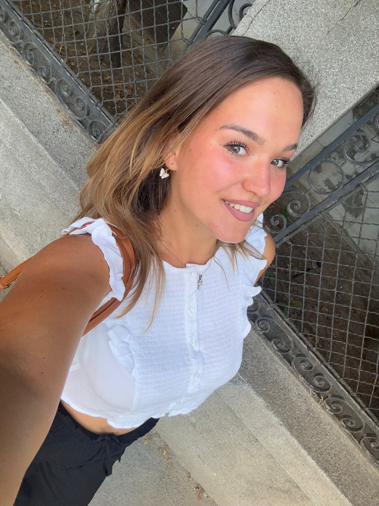
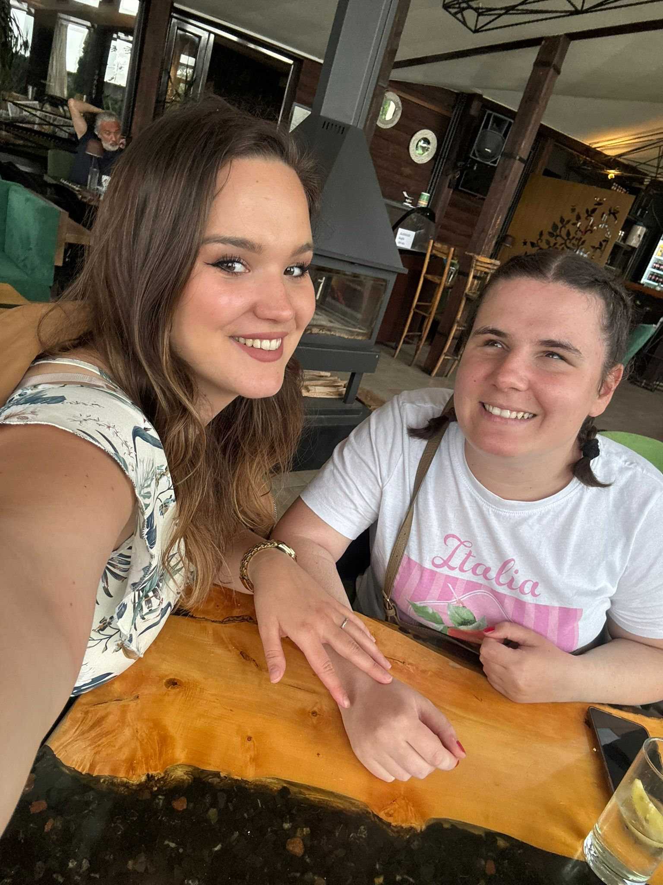

Raspored Predstojećih Događaja
školom pevanja - "Kreatopolis"
📍 Otvori mapu
Predhodni Događaji
📍 Otvori mapu

Sofija Jovanović
Vesela, energična, raspevana, druželjubiva, tako bih sebe najbolje opisala. Ja sam master pedagog, koji od malena gaji ljubav prema muzici. Završila sam nižu muzičku školu za violinu, a kasnije i za solo pevanje, što mi je otvorilo brojna vrata u svetu muzike… Volim da maštam, stvaram, putujem i uživam u društvu dragih ljudi.
Sofija: "Oduvek sam znala da zelim nesto svoje, u šta ću uložiti puno energije, truda, rada i što će jednog dana možda prerasti u nešto veliko! Stalno sam maštala i verovala ali nisam znala šta je to "NEŠTO" što želim"
Zvuk Nade - organizovanje humanitarnih svirki
Ideja se rodila u spontanom razgovoru između Sofije i njenog brata: Pomoć deci koja su bolesna, a ujedno i mladim muzičarima koji žele da se probiju, a ne znaju kako i gde...
Sofija: "Nikolina je moja velika podrška, dugogodišnji prijatelj, a sada i saradnik u ovom poduhvatu. 🥰 Ukrštanje glasova nam je svakodnevica i radujemo se što ćemo imati priliku da sa vama podelimo našu ljubav prema muzici i međusobnu energiju…"

Nikolina Milojević
Moj život je od najranijeg detinjstva neraskidivo povezan sa muzikom. Sa apsolutnim sluhom kao darom koji mi je otvorio vrata čistih tonova, svoj muzički put gradila sam kroz klavir, koji sam i završila. Za mene, klavirske dirke i pesma nisu samo umetnost, već prostor u kome ne postoje granice i gde se svetlost meri emocijama koje delimo. Danas, muzika je moj životni poziv, a svakim svojim izvođenjem želim da prenesem tu čistu, iskonsku magiju zvuka koja me pokreće od malih nogu.
Nikolina: "Svet nikada nisam posmatrala očima, već sluhom i srcem – muzika je od samog početka bila moj prozor u svet, moj jezik i moj najprirodniji način izražavanja."